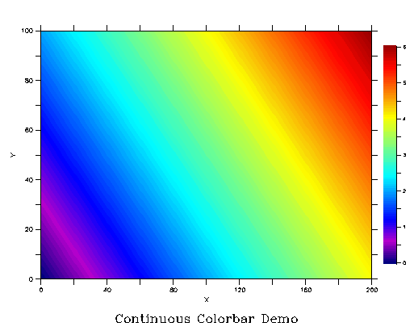
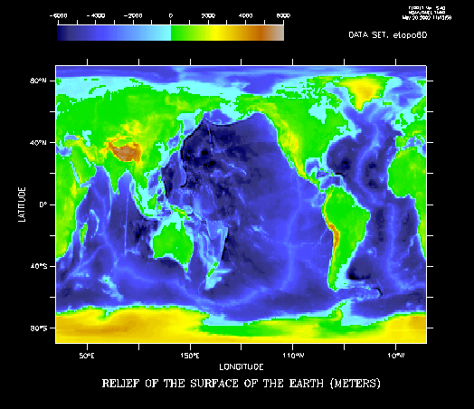
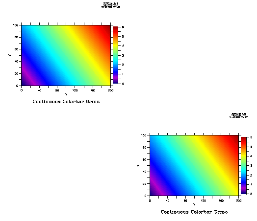

How to use the Ferret ccbar.jnl script
Below is an annotated version of the script
ccbar_demo.jnl
ccbar_demo.jnl (5/02)
Description: demonstrate continuous colorbar on plots that use color fill and
shade.
 |
! Define a variable ranging from 0 to 6 and plot it in fine
! detail with the default colorbar. Note the key doesn't
! look good, particularly on a small plot!
yes? DEFINE axis/x=0:200:1 xax
yes? DEFINE axis/y=0:100:1 yax
yes? LET var=6*(X[GX=xax]+Y[GY=yax])/300
yes? FILL/LEV=(0,6,0.06)/TITLE="Default Colorbar" var
|
The script ccbar.jnl defines a new viewport and fills that viewport
with a shade plot of a variable that has the desired range of levels.
The arguments of ccbar.jnl are as follows:
! GO ccbar x1 x2 y1 y2 v1 v2 dv orient palette
! x1 = x lo limit of rectangle for the colorbar
! x2 = x hi limit of rectangle for the colorbar
! y1 = y lo limit of rectangle for the colorbar
! y2 = y hi limit of rectangle for the colorbar
! v1 = lo value on colorbar
! v2 = hi value on colorbar
! dv = delta value for clorbar axis
!
! orientation = v for vertical or h for horizontal, default v
! palette to use, optional
Where the first four arguments define a rectangle, as a fraction
of the entire plot page. This is equivalent to how DEFINE VIEWPORT
works. Its qualifiers /XLIMITS=x1,x2 and /YLIMITS=y1,y2 allow the
user to specify a portion of the graphics window as the viewport.
We will replot the variable defined above, but hold off on the colorbar
|  |
! First SET VIEW, so that the key can be added as a viewport
yes? SET VIEW full ! this holds the actual plot
yes? FILL/LEV=(0,6,0.06)/TITLE="Continuous Colorbar"/NOKEY var
! Plot the continuous colorbar, taking up the fraction of the
! window from x=0.93 to 0.96, y=0.2 to 0.8, and showing levels
! from 0 to 6, with increments of 0.06. Orient it vertically.
yes? GO ccbar 0.93,0.96, 0.2,0.8, 0,6,0.06, v 000000000000
|
Next, a pretty one using the ETOPO topography/bathymetry set, with a
horizontal color key at the top. This one uses the palette argument.
| 
|
yes? GO black
yes? USE etopo60
yes? SET VIEW full
yes? SHADE/LEV=(-6000,6000,100)/AXES=1,1,1,1/NOKEY/PALETTE=land_sea rose
! Locate the colorbar in x=0.12 to 0.6; y=0.9 to 0.94, and the range
! of data and palette matches what was used to plot the data.
yes? GO ccbar 0.12,0.6 0.9,0.94, -6000,6000,100, h, land_sea
|
Now, what if you we want a continuous colorbar for a plot in a viewport?
The location parameters are still a fraction of the whole plot page.
We must locate the colorbar as a viewport keeping in mind how the shade-plot
viewport relates to the scale of the entire page. The SHOW VIEWPORT command
helps here. Let's go back to the variable created for the first plot,
and put that plot in two pre-defined viewports, UL and LR.

|
yes? DEFINE axis/x=0:200:1 xax
yes? DEFINE axis/y=0:100:1 yax
yes? LET var=6*(X[GX=xax]+Y[GY=yax])/300
yes? SET VIEW ul
yes? FILL/LEV=(0,6,0.06)/TITLE="Continuous Colorbar"/NOKEY var
yes? SHOW VIEW ul
name text xlimits ylimits mode
UL 0.50 0.00,0.50 0.50,1.00 edges
! The viewport UL takes the fraction of the page from
! x=0 to 0.5, y=.5 to 1. Locate and size the key inside this.
yes? ccbar 0.44,0.46, 0.62,0.88, 0, 6, 0.06, v
! Similarly for a second viewport
yes? SET VIEW lr
yes? FILL/LEV=(0,6,0.06)/TITLE="Continuous Colorbar Demo"/NOKEY var
yes? SHOW VIEW lr
name text xlimits ylimits mode
LR 0.50 0.50,1.00 0.00,0.50 edges
yes? ccbar 0.94,0.96, 0.12,0.38 0,6,0.06, v
|
oar.pmel.contact_ferret@noaa.gov